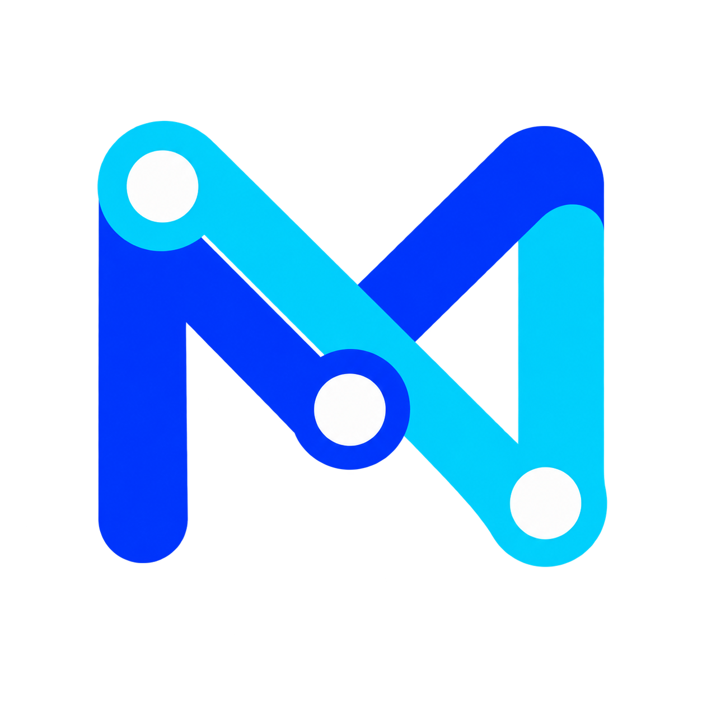

Too many doors
Different SDKs, auth headers, and streaming formats slow every integration down.
OpenAIAnthropicGemini…

MyAPIOpen gateway for modern teams
MyAPI is the self-hosted AI gateway that brings providers, routing, usage, and team access into one calm control plane.
The missing layer
Most teams accumulate provider keys, bespoke adapters, and mystery invoices. MyAPI gives that complexity a home — and gives people a single, dependable API.
Different SDKs, auth headers, and streaming formats slow every integration down.
Without request-level visibility, reliability and spend become educated guesses.
Teams need scoped access and clear ownership, not another shared secret in a chat.
A composed platform
Start small with one model. Grow into a resilient, observable gateway without changing the API your applications already know.
Priorities, weights, fallbacks, health checks, and model aliases — all in one routing layer.
Scoped project keys, quotas, concurrency, and audit trails for every caller.
Clean logs, raw JSON/SSE, request IDs, usage and cost — without leaking credentials.
LAN Lite turns a Mac or Windows workstation into a private AI gateway for your team. No cloud control plane required.
Provider freedom
Use official APIs, compatible gateways, or local services. MyAPI keeps protocol conversion and operational policy in one place.
Pick your shape
Use the full console for a shared service, or run a quiet gateway on your desk for a private LAN team.
The complete self-hosted control plane for multi-user operations, governance, usage and billing.
A minimal local gateway for macOS and Windows. Give colleagues API access without giving away upstream keys.
Trust the boundary
MyAPI is designed for operators who want useful access without surrendering control. Secrets stay server-side, logs are redacted, and every downstream key can be revoked.
Read the security notes ↗Bind to localhost or a private CIDR. Choose when to open the LAN.
Separate keys, model allowlists, quotas, and audit for every teammate.
Inspect payloads and SSE without writing provider secrets to storage.
A five-minute start
Choose a documented edition, pin its image, open the console, and hand your team a scoped API key.
$ myapi lan init ./myapi-lan
$ myapi lan start --project-dir ./myapi-lan
$ myapi lan status --project-dir ./myapi-lan
# Full edition: pin a version in deploy/.envBuild your own calm
MyAPI is an independent, open distribution for people who would rather understand their AI stack than rent a black box.
Explore MyAPI ↗